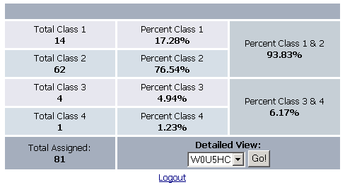
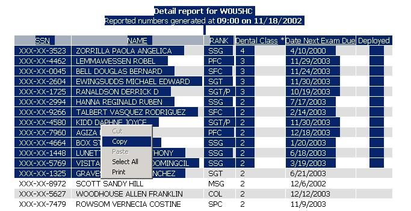
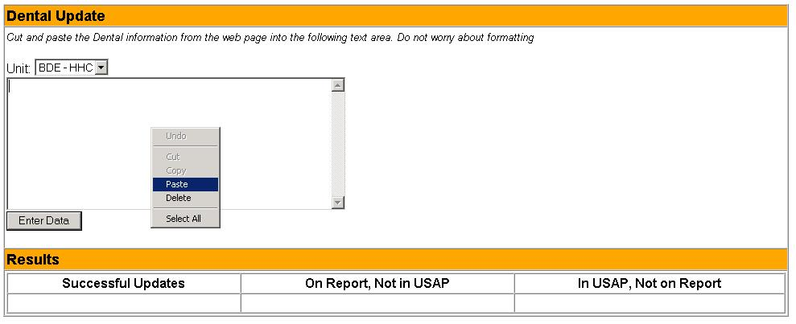
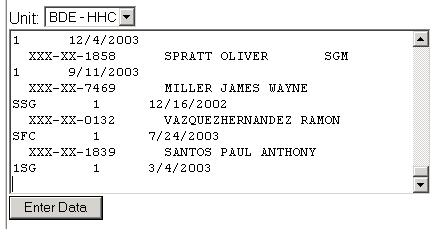

Dental Update Directions
- Open up the address http://www.dencom.army.mil into your web browser. Click on
UCV in the upper right hand corner of the page. This should bring up a log in form. Enter your Access Code
and Password and click the Login button.
- If you successfully log in, you should be presented with a screen that has a rollup of all your dental categories and
percentages as shown in this picture:

In the lower right of the table under Detailed View, choose your UIC and click the Go! button.
- This should bring you to a complete listing of everyone in your unit and their dental category. Using your mouse,
click the left mouse button somewhere above the names and hold it down. Drag your mouse to highlight all of the names
on the page. Once all of the names are highlighted, release the mouse button, press the right mouse and choose
Copy from the menu. It should look something like this:

- Once you have clicked copy, go back into USAP and click on Dental Update in the menu. This will
bring up a page with a select box to choose your unit and a large text box. Choose your unit from the drop down. Now,
click the right mouse button somewhere within this large text box and choose Paste from the menu.

After you choose Paste, all of the names should appear in the text box. Do not worry about the formatting of the names,
just leave them as they are. You should end up with something like this:

- Now click the Enter Data button.
- If all goes well, you should see 3 or 4 columns of names under the text box when the page returns.
- Successful Updates: These names were successfully updated with the new dental category
- Failed Updates: This column will only appear if you have had errors. The names in this
column could not be updated for some reason. Contact your administrator for help.
- On Report, Not in USAP: These names appeared on the Dental Report you pasted into the text
area, but did not match any name in USAP, in the unit you chose.
- In USAP, Not on Report: These names are in USAP under the unit you chose, but did not appear
on the Dental Report you pasted into the text area.
- It is up to you to follow up on the names reported in the second two columns as to why they are not in the
database and/or in USAP.
If there are any questions, contact 1LT John W. Holmes, 791-2864, holmesj@gordon.army.mil